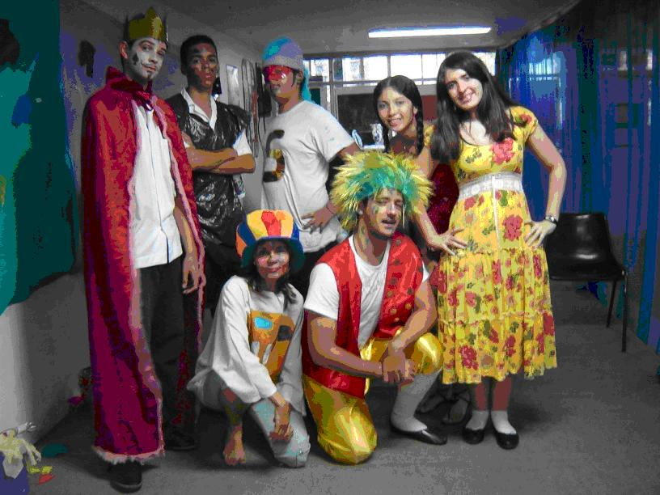
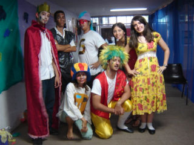

Institucional
Institucional
 Projeto Criarte
Projeto Criarte
CRIARTE - O GRUPO DE TEATRO DO CPII
UNIDADE ESCOLAR ENGENHO NOVO II
HISTÓRICO
O grupo existe desde 2005 e admite alunos de quaisquer
séries, interessados voluntariamente em ingressar, sem que
seja necessária experiência. Nosso objetivo
é formar um grupo amador de qualidade.
ENSAIOS
Este ano de 2011 ocorrem às 2as, 3as e 5as feiras,
sempre no horário do almoço (entre 12.00 e 13.00.
DIREÇÃO
Professora Tânia Panaro, coordenadora do 9º
Ano, com 30 anos de experiência teatral.
ALGUNS DE NOSSOS
ESPETÁCULOS MEMORÁVEIS:

1) "Pin Cel e o presente de aniversário", "Pin Cel, surf,bronzeado e...lixo???"
Espetáculos infanto-juvenis, que visam desenvolver a criatividade artística e noções de cidadania. Espetáculos já apresentados aos “Pedrinhos” e 6º Ano do “Pedrão”, bem como outras escolas e igrejas.

2) O “Reinado do Rei"
Uma sátira provocativa da situação política nacional. Em um reino não muito distante, um novo rei sobe ao poder. Preguiçoso e rodeado por ministros mal intencionados, acaba sucumbindo à ganância, abrindo espaço para uma revolução com conseqüências surpreendentes. Espetáculo “tradicional” do grupo, sucesso inclusive junto ao PROEJA e outras escolas e Unidades do CPII.

3) Enquanto Você Vê TV
Uma leitura satírica de nossa relação com a mídia. Este espetáculo já foi apresentado inclusive aos alunos do PROEJA.
GRANDES ACONTECIMENTOS DE
2010:

Além de nossa farta “temporada”, cumprida na nossa Unidade, outras escolas e PROEJA, fomos classificados no festival de Arte de Cultura promovido pelo governo federal. Infelizmente não chegamos a ir à Brasília, pois o festival foi adiado por conta das eleições presidenciais.
PLANOS PARA 2011
O principal é manter a qualidade do grupo. Pretendemos montar um espetáculo que fale sobre os alunos do CPII nas décadas de 60 e 70. Este será escrito por vários componentes do grupo. Além disso, reapresentaremos os textos do “Pin Cel” e uma nova montagem do “Enquanto você vê TV”